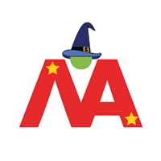

ACCREDITATIONS

MENTORSHIP
PARTNERS

Co-founders Tom Farrow (current Head of S&C for England Rugby Men's 7's, and ex-EIS) and Ian Taplin (ex-Wasps Rugby Head of Performance) set up the company with the aim of providing a range of S&C services to individuals and teams, as well as learning opportunities for placement students and the wider public through tier Lyceum Events. Griff acts as a consultant to the organisation.
Coach Logic is a collaborative video analysis platform for sports teams. The platform allows player and coach communication, in addition to empowering the athletes to drive their own performance analysis process. Griff introduced the platform when Head Coach at Richmond RFC Women's Premiership XV and has worked with the platform during his time at Fulham FC Academy.
Hexis is best-in-class nutritional support via a mobile phone app. Co-founder David Dunne has experience of working within football, rugby, several Olympic sports, boxing, and golf. He has developed the app using behavioural change and gamification techniques, together with his own PhD research, to support appropriate individualised nutrition decision making for athletes. Griff utilises the app with his athletes.

The Magic Academy was set up by Russell Earnshaw and John Fletcher to provide world-class rugby specific coaching knowledge to its membership via mentoring, coach leadership, and support for individuals and teams. Griff works with Russell Earnshaw providing coaching services and camps across the USA.
Proformance is a coach education network for fitness and performance coaches around the world. Griff is a Proformance Faculty member, helping to disseminate youth related sport science and S&C training knowledge to coaches world-wide.
Remedy is an exclusive health service based in London, offering clients a personalised one-on-one approach to their problems. Griff provides Strength and Conditioning and Sports Science consultancy services to Remedy.